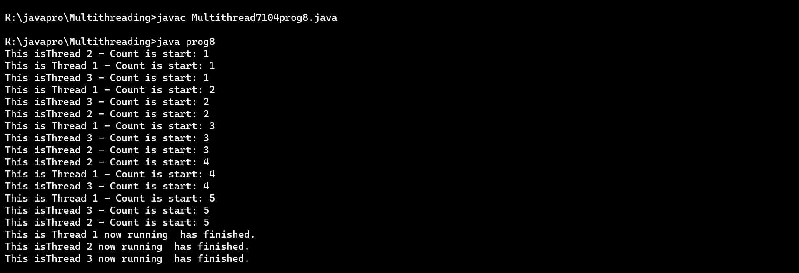

JAVA MULTITHREADING
Choose Topic to See Programs
1.Write a Java program to create a basic Java thread that prints "Hello, World!" when executed.
Program:
class sampleThread extends Thread{
public void run(){
System.out.println("hello world");
}
}
public class Multithreading_1{
public static void main(String[] args) {
sampleThread foo = new sampleThread();
foo.run();
}
}
Output:

2. Write a Java program that creates two threads to find and print even and odd numbers from 1 to 20.
Program:
public class pro2 {
public static void main(String[] args) {
OddThread oddThread = new OddThread();
EvenThread evenThread = new EvenThread();
oddThread.start();
evenThread.start();
}
}
class OddThread extends Thread {
public void run() {
for (int i = 1; i <= 20; i += 2) {
System.out.println("Odd: " + i);
try {
Thread.sleep(500);
} catch (InterruptedException e) {
e.printStackTrace();
}
}
}
}
class EvenThread extends Thread {
public void run() {
for (int i = 2; i <= 20; i += 2) {
System.out.println("Even: " + i);
try {
Thread.sleep(500);
} catch (InterruptedException e) {
e.printStackTrace();
}
}
}
}
Output:
3. Write a Java program that sorts an array of integers using multiple threads.
Program:
/* Write a Java Program that sorts an array of integers using multiple threads. */
import java.util.Arrays;
class ParallelMergeSort {
private final int[] array;
private ParallelMergeSort(int[] array) {
this.array = array;
}
private void merge(int low, int mid, int high) {
int[] left = Arrays.copyOfRange(array, low, mid + 1);
int[] right = Arrays.copyOfRange(array, mid + 1, high + 1);
int i = 0, j = 0, k = low;
while (i < left.length && j < right.length) {
if (left[i] <= right[j]) {
array[k++] = left[i++];
} else {
array[k++] = right[j++];
}
}
while (i < left.length) {
array[k++] = left[i++];
}
while (j < right.length) {
array[k++] = right[j++];
}
}
private void mergeSort(int low, int high) {
if (low < high) {
int mid = (low + high) / 2;
Thread leftThread = new Thread(() -> mergeSort(low, mid));
Thread rightThread = new Thread(() -> mergeSort(mid + 1, high));
leftThread.start();
rightThread.start();
try {
leftThread.join();
rightThread.join();
} catch (InterruptedException e) {
e.printStackTrace();
}
merge(low, mid, high);
}
}
private static void parallelMergeSort(int[] array) {
ParallelMergeSort sorter = new ParallelMergeSort(array);
sorter.mergeSort(0, array.length - 1);
}
public static void main(String[] args) {
int[] arr = {12, 4, 7, 3, 9, 5, 2, 1, 6, 11, 8, 10};
System.out.println("Array before sorting: " + Arrays.toString(arr));
parallelMergeSort(arr);
System.out.println("Array after sorting: " + Arrays.toString(arr));
}
}
Output:

4.Write a Java program that performs matrix multiplication using multiple threads.
import java.util.Scanner;
class Matrix {
public static void main(String[] args) {
Scanner scanner = new Scanner(System.in);
// Input matrices dimensions
System.out.print("Enter the number of rows for the first matrix: ");
int rowsA = scanner.nextInt();
System.out.print("Enter the number of columns for the first matrix: ");
int colsA = scanner.nextInt();
System.out.print("Enter the number of rows for the second matrix: ");
int rowsB = scanner.nextInt();
System.out.print("Enter the number of columns for the second matrix: ");
int colsB = scanner.nextInt();
if (colsA != rowsB) {
System.out.println("Matrix multiplication is not possible with the given dimensions.");
return;
}
System.out.println("Enter elements for the first matrix:");
int[][] matrixA = readMatrix(rowsA, colsA, scanner);
System.out.println("Enter elements for the second matrix:");
int[][] matrixB = readMatrix(rowsB, colsB, scanner);
int[][] resultMatrix = multiplyMatrices(matrixA, matrixB);
System.out.println("\nResult Matrix (Multiplication of Matrix A and Matrix B):");
displayMatrix(resultMatrix);
scanner.close();
}
private static int[][] readMatrix(int rows, int cols, Scanner scanner) {
int[][] matrix = new int[rows][cols];
for (int i = 0; i < rows; i++) {
for (int j = 0; j < cols; j++) {
System.out.print("Enter element at position (" + (i + 1) + "," + (j + 1) + "): ");
matrix[i][j] = scanner.nextInt();
}
}
return matrix;
}
private static int[][] multiplyMatrices(int[][] matrixA, int[][] matrixB) {
int rowsA = matrixA.length;
int colsA = matrixA[0].length;
int colsB = matrixB[0].length;
int[][] resultMatrix = new int[rowsA][colsB];
MatrixMultiplicationThread[] threads = new MatrixMultiplicationThread[rowsA];
for (int i = 0; i < rowsA; i++) {
threads[i] = new MatrixMultiplicationThread(i, matrixA, matrixB, resultMatrix);
threads[i].start();
}
try {
for (MatrixMultiplicationThread thread : threads) {
thread.join();
}
} catch (InterruptedException e) {
e.printStackTrace();
}
return resultMatrix;
}
private static void displayMatrix(int[][] matrix) {
for (int[] row : matrix) {
for (int value : row) {
System.out.print(value + " ");
}
System.out.println();
}
}
}
class MatrixMultiplicationThread extends Thread {
private int row;
private int[][] matrixA;
private int[][] matrixB;
private int[][] resultMatrix;
public MatrixMultiplicationThread(int row, int[][] matrixA, int[][] matrixB, int[][] resultMatrix) {
this.row = row;
this.matrixA = matrixA;
this.matrixB = matrixB;
this.resultMatrix = resultMatrix;
}
@Override
public void run() {
int colsA = matrixA[0].length;
int colsB = matrixB[0].length;
for (int j = 0; j < colsB; j++) {
for (int k = 0; k < colsA; k++) {
resultMatrix[row][j] += matrixA[row][k] * matrixB[k][j];
}
}
}
}
Output:

5.Write a Java program that calculates the sum of all prime numbers up to a given limit using multiple threads.
Program:
// Calculate sum of prime numbers up to a given limit using multiple threads
class MyThread extends Thread {
private int start, end;
private int sum = 0;
MyThread(int start, int end) {
this.start = start;
this.end = end;
}
public void run() {
System.out.println("My thread is running");
for (int i = start; i <= end; i++) {
if (isPrime(i))
sum += i;
}
}
boolean isPrime(int n) {
if (n == 0 || n == 1)
return false;
for (int i = 2; i <= Math.sqrt(n); ++i) {
if (n % i == 0)
return false;
}
return true;
}
public int getSum() {
return sum;
}
}
class SumOfPrimes {
MyThread[] myThreads;
private int sum = 0;
private int limit = 20;
private static int threadCount = 4;
// Constructor to initialize the array of threads
public SumOfPrimes(int n) throws InterruptedException {
this.myThreads = new MyThread[n];
for (int i = 0; i < n; i++) {
int start = ((limit * i) / n);
int end = (i == n-1) ? limit : ((limit * (i+1))/n) - 1;
myThreads[i] = new MyThread(start, end);
}
}
// Function to start all threads
public void startAll() throws InterruptedException {
for (int i = 0; i < myThreads.length; i++) {
myThreads[i].start();
myThreads[i].join();
}
}
public void getSum() {
for (int i = 0; i < myThreads.length; i++) {
this.sum += myThreads[i].getSum();
}
}
public static void main(String[] args) {
try {
SumOfPrimes mt = new SumOfPrimes(threadCount);
mt.startAll();
mt.getSum();
System.out.println("Sum of prime numbers is " + mt.sum);
} catch (InterruptedException e) {
System.err.print("Error: " + e);
}
}
}
Output:

6.Write a Java program to implement a concurrent web crawler that crawls multiple websites simultaneously using threads.
Program:
public class pro6 {
private static final int MATRIX_SIZE = 3;
private static final int NUM_THREADS = 2;
public static void main(String[] args) {
int[][] matrix1 = {
{
1,
2,
3
},
{
4,
5,
6
},
{
7,
8,
9
}
};
int[][] matrix2 = {
{
9,
8,
7
},
{
6,
5,
4
},
{
3,
2,
1
}
};
int[][] result = new int[MATRIX_SIZE][MATRIX_SIZE];
Thread[] threads = new Thread[NUM_THREADS];
int segmentSize = MATRIX_SIZE / NUM_THREADS;
for (int i = 0; i < NUM_THREADS; i++) {
int startIndex = i * segmentSize;
int endIndex = (i == NUM_THREADS - 1) ? MATRIX_SIZE - 1 : (startIndex + segmentSize - 1);
threads[i] = new Thread(new MultiplicationTask(matrix1, matrix2, result, startIndex, endIndex));
threads[i].start();
}
for (Thread thread: threads) {
try {
thread.join();
} catch (InterruptedException e) {
e.printStackTrace();
}
}
// Print the result matrix
System.out.println("Result:");
for (int[] row: result) {
for (int element: row) {
System.out.print(element + " ");
}
System.out.println();
}
}
static class MultiplicationTask implements Runnable {
private int[][] matrix1;
private int[][] matrix2;
private int[][] result;
private int startIndex;
private int endIndex;
public MultiplicationTask(int[][] matrix1, int[][] matrix2, int[][] result, int startIndex, int endIndex) {
this.matrix1 = matrix1;
this.matrix2 = matrix2;
this.result = result;
this.startIndex = startIndex;
this.endIndex = endIndex;
}
@Override
public void run() {
int cols = matrix2[0].length;
for (int i = startIndex; i <= endIndex; i++) {
for (int j = 0; j < cols; j++) {
for (int k = 0; k < MATRIX_SIZE; k++) {
result[i][j] += matrix1[i][k] * matrix2[k][j];
}
}
}
}
}
}
Output:
7.Write a Java program that creates a bank account with concurrent deposits and withdrawals using threads.
import java.util.concurrent.locks.Lock;
import java.util.concurrent.locks.ReentrantLock;
public class pro7 {
private double balance;
private Lock lock;
public pro7() {
balance = 0.0;
lock = new ReentrantLock();
}
public void deposit(double amount) {
lock.lock();
try {
balance += amount;
System.out.println("Deposit: " + amount);
System.out.println("Balance after deposit: " + balance);
} finally {
lock.unlock();
}
}
public void withdraw(double amount) {
lock.lock();
try {
if (balance >= amount) {
balance -= amount;
System.out.println("Withdrawal: " + amount);
System.out.println("Balance after withdrawal: " + balance);
} else {
System.out.println("Try to Withdraw: " + amount);
System.out.println("Insufficient funds. Withdrawal cancelled.");
}
} finally {
lock.unlock();
}
}
public static void main(String[] args) {
pro7 account = new pro7();
Thread depositThread1 = new Thread(() -> account.deposit(1000));
Thread depositThread2 = new Thread(() -> account.deposit(300));
Thread withdrawalThread1 = new Thread(() -> account.withdraw(150));
Thread withdrawalThread2 = new Thread(() -> account.withdraw(1200));
depositThread1.start();
depositThread2.start();
withdrawalThread1.start();
withdrawalThread2.start();
}
}
Output:
8.Create the program to create multiple threads by using Runnbale interface.
class prog8 {
public static void main(String[] args) throws java.lang.ClassNotFoundException {
Runnable r1 = new MyRun("This is Thread 1");
Runnable r2 = new MyRun("This isThread 2");
Runnable r3 = new MyRun("This isThread 3");
Thread t1 = new Thread(r1);
Thread t2 = new Thread(r2);
Thread t3 = new Thread(r3);
t1.start();
t2.start();
t3.start();
}
@Override
public String toString() {
return "prog1 []";
}
}
class MyRun implements Runnable {
private String tn;
public MyRun(String name) {
this.tn = name;
}
@Override
public void run() {
for (int i = 1; i <= 5; i++) {
System.out.println(tn + " - Count is start: " + i);
try {
Thread.sleep(1000);
} catch (InterruptedException e) {
Thread.currentThread().interrupt();
}
}
System.out.println(tn + " now running has finished.");
}
}
Output:

9.Create the program to create multiple threads by using Thread class.
public class pro9 extends Thread
{
String task;
pro9(String task)
{
this.task = task;
}
public void run()
{
for(int i = 1; i <= 5; i++)
{
System.out.println(task+ " : " +i);
try
{
Thread.sleep(1000);
}
catch(InterruptedException ie) {
System.out.println(ie.getMessage());
}
}
}
public static void main(String[] args)
{
pro9 th1 = new pro9("Hello");
pro9 th2 = new pro9("World.");
Thread t1 = new Thread(th1);
Thread t2 = new Thread(th2);
t1.start();
t2.start();
}
}
Output:
10.Create the program to create multiple threads, set its name and its priority.
public class pro10 implements Runnable
{
public void run()
{
System.out.println(Thread.currentThread());
}
public static void main(String[] args)
{
pro10 a = new pro10();
Thread t1 = new Thread(a, "Thread1");
t1.setPriority(2);
Thread t2 = new Thread(a, "Thread2");
t2.setPriority(4);
Thread t3 = new Thread(a, "Thread3");
t3.setPriority(3);
Thread t4 = new Thread(a, "Thread4");
t4.setPriority(1);
System.out.println("Priority of Thread: " +t2.getPriority());
System.out.println("Name of Thread: " +t2.getName());
t1.start();
t2.start();
t3.start();
t4.start();
}
}
Output:
11.Create the program to create multiple threads, show an example of synchronization keyword.
class First
{
synchronized public void display(String msg)
{
System.out.print ("["+msg);
try
{
Thread.sleep(1000);
}
catch(InterruptedException e)
{
e.printStackTrace();
}
System.out.println ("]");
}
}
class Second extends Thread
{
String msg;
First fobj;
Second (First fp,String str)
{
fobj = fp;
msg = str;
start();
}
public void run()
{
fobj.display(msg);
}
}
public class pro11
{
public static void main (String[] args)
{
First fnew = new First();
Second ss = new Second(fnew, "welcome");
Second ss1= new Second(fnew,"new");
Second ss2 = new Second(fnew, "programmer");
}
}
Output:
12.Create the program to create multiple threads, show an example of notify, notifyall, wait, resume, sleep methods.
class ShareResources {
private int value;
private boolean isP;
public synchronized void P(int newV) {
while (isP) {
try {
wait();
} catch (InterruptedException e) {
Thread.currentThread().interrupt();
}
}
value = newV;
System.out.println("Your thread is processing: " + value);
isP = true;
notify();
}
public synchronized void C(int newV) {
while (!isP) { // Change isP to !isP
try {
wait();
} catch (InterruptedException e) {
Thread.currentThread().interrupt();
}
}
value = newV;
System.out.println("Your thread is processing: " + value);
isP = false;
notify();
}
}
class P implements Runnable {
private ShareResources sR;
public P(ShareResources sR) {
this.sR = sR;
}
@Override
public void run() {
for (int i = 1; i <= 5; i++) {
sR.P(i);
try {
Thread.sleep(1000);
} catch (InterruptedException e) {
Thread.currentThread().interrupt();
}
}
}
}
class C implements Runnable {
private ShareResources sR;
public C(ShareResources sR) {
this.sR = sR;
}
@Override
public void run() {
for (int i = 1; i <= 5; i++) {
sR.C(i); // Change sR.P(i) to sR.C(i)
try {
Thread.sleep(1000);
} catch (InterruptedException e) {
Thread.currentThread().interrupt();
}
}
}
}
public class pro12 {
public static void main(String[] args) {
ShareResources sR = new ShareResources();
Thread proc = new Thread(new P(sR));
Thread cons = new Thread(new C(sR));
proc.start();
cons.start();
}
}
Output:
13.Create the program to create multiple threads, show an example of join and yield methods.
public class pro13 extends Thread
{
public void run()
{
for (int i=0; i< 3 ; i++)
System.out.println(Thread.currentThread().getName() + " in control");
}
public static void main(String[]args)
{
pro13 t1 = new pro13();
pro13 t2 = new pro13();
t1.start();
t2.start();
for (int i=0; i< 3; i++)
{
t1.yield();
System.out.println(Thread.currentThread().getName() + " in control");
}
}
}
public class pro13 extends Thread
{
public void run()
{
System.out.println(" r1 " );
try {
Thread.sleep(500);
}catch(InterruptedException ie){ }
System.out.println("r2 ");
}
public static void main(String[] args)
{
pro13 t1=new pro13();
pro13 t2=new pro13();
t1.start();
try{
t1.join(); //Waiting for t1 to finish
}catch(InterruptedException ie){}
t2.start();
}
}
Output: